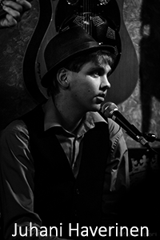
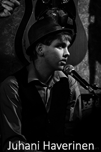

Dynamomap

 

erika
juhani
janne
Nimeni - Kalle Sedergren
Sydäntä lähinnä olevat asiat -
Rummut ja vanillawowi vapaa-aikana, välillä myös silloin, kun vapaa-aikaa ei kauheasti ole.
Opiskelujen osalta CSS ja tekstianimaatioilla leikkiminen.
Tykkään myös eläimistä, vaikka ihan saatanan allerginen olenkin.
Kirosanat ovat ainoat adjektiivit, joita osaan käyttää.
En soita bassoa.
maiju
mikko